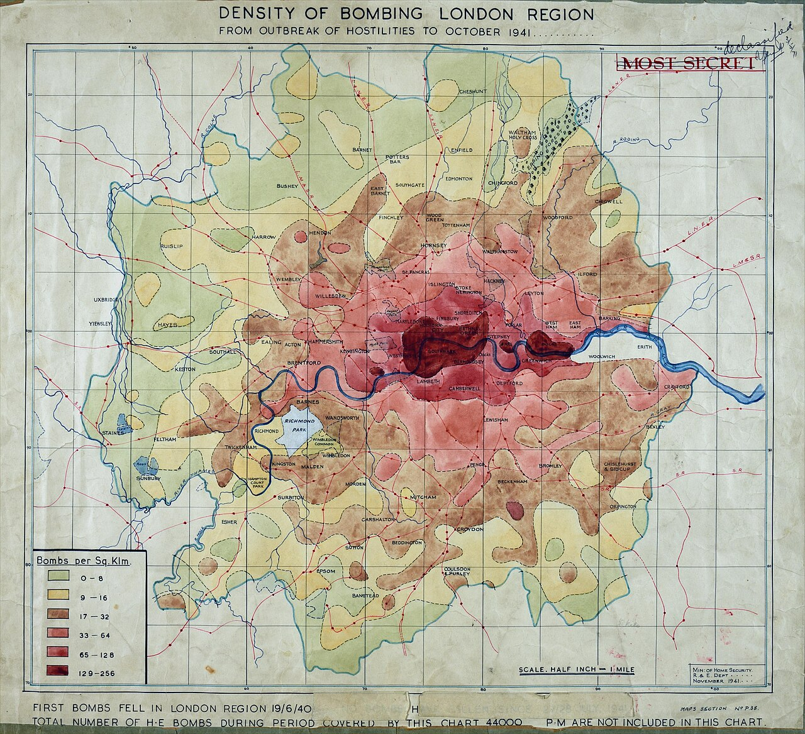

Chapter Ten
1940–1945
"The docks are burning. The docks are always burning."
— ARP Warden's notebook, Stepney, 1940
1940: A Warden's Watch

Chapter Sections
I. Blackout
The blackout changes everything. Not the war — the war is still over the Channel, in the papers. The blackout is here, in the room. Every window covered, every door sealed, every crack taped shut. The city has put out its own eyes.
The paper on the windows is government issue, thin and brown, impossible to keep flat. It curls at the edges. Someone re-tapes it every morning. Drinking inside feels like drinking inside a coffin — one that smells of damp wool, bad tobacco, and what the regulars still call best bitter, though rationing's thinned it paler than it used to run.
Sandbags at the door, along the bar, piled where the card table used to sit. Smell of the river on them, though the sand came from somewhere else. Maybe everything in this room ends up smelling like the river eventually.
Outside, the Thames is black — not dark, black, no reflections at all, nothing on the far bank to catch. No boats moving either; river traffic's restricted, and moving at the wrong hour gets you shot at by your own side. The water can be heard but not seen, and it sounds heavier in the dark, closer, like something waiting.
The regulars come in earlier now, before the sirens can catch them outside. They talk about the football pools, the weather, anything except the one thing on everyone's mind — whether tonight's the night a bomb finds this room. Two of them are already deep into the old argument about whether the new steamers will finish off the sailing trade in ten years or twenty, exactly the argument they were having before the war and will apparently keep having through it.
II. The Warden's Post
Gwen comes in at half six. Steel helmet, gas mask case on her hip, ARP badge that gives her the authority to send people to shelter and no authority at all over where the bombs actually land.
She takes the corner table — her post, every night, because from there she can see the river, and the bombers use the river as their road straight to the docks five minutes' walk from this table. It isn't only the view that keeps her here. Her son Peter is an Auxiliary fireman, nineteen years old, assigned to the pumps at the Surrey Commercial most nights this month, and from this table, on a clear one, she can sometimes make out the glow of wherever his crew's working before the smoke closes over it. She has never told anyone that's the real reason for the corner table. Let them think it's for the record. The record is real too. It just isn't the whole of it.
She opens a small notebook, blue cover, pencil in the spine, and writes. Date, time, location, damage. She's kept it since the seventh of September, the first night, three hundred and forty-eight bombers turning the docks into a furnace.
Hannah brings her tea she won't drink. Never does. She writes instead.
A bomb falls, distant, maybe two miles east. The sound arrives in the chest before the ears catch it. Glasses chime on the shelf. Gwen doesn't flinch — just writes the time, the direction, two words for what kind. Then goes back to waiting for the next one.
III. The Ledger of Destruction

On the third night of her rotation she reads from the notebook out loud, to nobody and everybody, in the flat voice of a clerk reading a bill of lading.
September seventh. First day. Three hundred and forty-eight bombers, up the Thames like a procession. East India Docks, West India Docks, Surrey Commercial — all hit. St Katharine's gone completely. Warehouse, basin, lock gate, in one night.
September ninth. Incendiaries on the timber sheds. Burned three days. Sky was orange for a week.
September eighteenth. West India again — rum, sugar, mahogany, all of it burning. The river itself on fire.
She stops, drinks the cold tea, makes a face, keeps going.
December twenty-ninth. The Second Great Fire, they're calling it. Incendiaries on the City, hundreds of them, fires joining into one fire until nobody could say where it started. Guildhall gone. St Paul's only standing because men stood on the roof and hosed it by hand while the bombs came down around them.
She closes the book.
Twenty-nine thousand bombs on the docks since September, she says. And counting.
She opens it again and adds tonight's line. The dock system the Company built — the pepper docks, the tea docks, the engine room of an empire — burning, page by page.
One night in October the wind comes off a burning bond up-river where a gin house kept its stock, and for an hour the smoke over Wapping smells of juniper — the whole parish briefly aromatic, like the inside of a stone bottle — and the docker, sniffing at the door, observes that Jerry has finally hit something London will genuinely miss. It is the only joke anyone makes that week, and it does the work of ten.
And once, between two nights of bombs, there is a line in the notebook that is not damage. Fuchsia flowering, west sill, it says — because the pot still stands where it has stood for a century and a half, and Hannah carries it down to the cellar at every siren and back up at every all-clear, the one resident of the house with a guaranteed shelter place. Gwen recorded it the way she records everything: once, exactly, without comment. A ledger of destruction is still a ledger. It takes what it's given.
IV. The Man from Halifax
He comes in on a Friday, Canadian, young — twenty-three, maybe — trying hard to look like a man who isn't scared and failing at it.
Beer. Hannah pours him the best bitter. He drinks, makes a face.
That's — huh.
It's beer, Hannah says.
Is it, though?
He's a merchant sailor, or was, before a mine put his ship in dock for repairs and stranded him here. Talks fast and too much, the way frightened men fill silence. Girls in three ports, a convoy that lost eleven ships out of forty-two crossing the Atlantic — gone, no wreckage even, just water where a ship used to be.
Somebody asks about the girls, because somebody always does, and instead he tells them the other story — the one he clearly tells in every port, the way some men wear a scar on purpose. First trip ashore, eighteen years old, Rotterdam, 'thirty-five. He'd asked a taxi driver to take him somewhere interesting, somewhere with people in it. The driver asked if he liked ladies. Sure, he said — being eighteen, and from Nova Scotia, and meaning it the way you'd mean liking weather. The house had a big black door and a staircase like a church, and the room at the top was purple and pink, velvet everywhere, like drinking inside a valentine card. So he sat down on the plush and asked the woman for a beer. We don't serve alcohol here, she says. What kind of bar doesn't keep beer? — and the whole room, this room, five years and one war later, is already ahead of him, already starting to go.
It wasn't a bar, he says, aggrieved, over the rising laughter. And then the girl came out, and — he holds up both hands — beautiful, honestly, like something out of a picture I wasn't supposed to be watching, and my face must have done something, because hers fell, and she says, all hurt: you don't like me? What's wrong with me? Nothing's wrong with you, I told her, nothing in this world, I was looking for a bar. And the madam — very kind about it, very motherly — says to her, the gentleman was not looking for this kind of experience, and walks me down the stairs like I'm being sent home from school. And the driver's still at the curb, window down, grinning like his horse came in. Did you have a good time? Where to now?
The room is gone by then — the old boys wheezing, somebody slapping the bar, Hannah laughing into the glasses she's drying. And the ship was worse, the Canadian says, mournful, milking it. Chief officer just looks at me and says, so you didn't do anything. I didn't do anything, I tell him. He says: oh, I know you didn't. We believed the second engineer too, when he got lost in a massage parlour in Bangkok for three hours. Couldn't find the exit, he said. And for months — months — every port we made, somebody offering to help me find a bar. Careful, son. Some places don't serve alcohol.
Then the laugh runs out, the way laughs run out now, on a clock everyone in the room can hear, and the man nearest the window says it, not unkindly, into his pint: burned, though. Rotterdam. Back in May. Middle of the city, gone in an afternoon. And the Canadian says, yeah. Yeah, I heard that. And nobody says anything about the girl in the purple room, because there is nothing to say that the war has left standing, and Hannah pours him another of the beer he doesn't believe is beer, and doesn't take his coin for it.
The whole world's connected, he says, hands not quite steady around his glass. I met a fella from Bombay on my last run, loading tea. Same tea that comes into these docks. Same route the Company used two centuries back. Different ships, same river.
He doesn't know the history — doesn't know the docks he's looking at were built in 1803, doesn't know what the Company was. He just knows ships and mines and girls, and he's living in the ruins of something much older than he understands, drinking in a bar that served its sailors two hundred years before his ship existed.
He's doing better than he thinks. Still upright. Still talking. Still drinking, which is more than some men in this room manage tonight.
V. The Man Who Remembers
He comes in after the Canadian's been talking an hour. Fifty-odd, though the docks have thrown in another ten for free — built short and wide, with the enormous hands of a man who has spent a working life lifting things not meant to be lifted, and a scar under one eye that a German gave him the last time the world did this.
A docker since he was fifteen, when his father walked him down to the water and told him this was his life now — the same walk his own father had once given him, and his before that. He's worked every dock on the river, and so had his father, the whole of a life, until this September — the same month the bombs came — when the old man's chest finally gave out and he clocked out of work and life in the same week, which is the only way his son has ever heard of a docker wanting to go. He buried him three weeks back, in the Limehouse ground where the family has always gone. Nobody in this room knows that tonight, because he has not said it, because saying a thing like that out loud is not the kind of thing his people do. His father drank in this room, so did his grandfather, and his grandfather's grandfather ran a chandler's shop off the Causeway two centuries back, supplying rope and tar to Company ships — a name, Carter, that means nothing to anyone in the room tonight except the docker himself, and even he only remembers it because his mother mentioned it once, in passing, the way families mention names that used to matter and don't anymore.
He listens to the talk of global networks and supply chains and snorts.
Global network, he says, like the words taste bad. You think moving cargo across oceans is something new?
Didn't say it was new.
You implied it. He orders a pint, sees off half of it in a swallow. These docks were built 1803. East India Company. Heard of them?
Sure. The tea people.
The tea people. He almost smiles. Tea, silk, spices, cotton, opium — everything from the east came through those docks. I worked them as a boy. Three ships could fit in the import dock alone.
He finishes the pint. Hannah refills without asking.
Now it's rubble. Whole lot of it, since September. He says it flat, not angry, the voice of a man watching something he saw coming arrive anyway. Bombed the docks in the last war too — Zeppelins, not as bad. Took two years to rebuild, but they did. I don't know if they'll rebuild this time. The docks were the engine room. Everything came through here. Now it's just burning.
He drinks. The Canadian drinks. Nobody says the thing everyone in the room already understands — that the docks are going first, and the empire that built them is going next.
VI. Underneath
The sirens start at quarter to nine. Nobody moves at first. Then the engines get louder, closer, felt in the teeth rather than heard, and everyone understands at once this is not a passing raid.
The first bomb is close. The building doesn't rattle — it shakes. Glasses leap off the shelf and shatter. The blackout paper tears free in strips, and orange light comes through where black should be. The docks, burning again. Or still.
Everyone hits the floor. Even the docker, who's spent weeks insisting he isn't afraid of bombs, who came through the last war and never lets the room forget it — under the table now with the rest of them. The Canadian's curled under the bar making a sound that isn't quite a word. The old laundrywoman from the Causeway — Chinese, seventy-odd, in this bar on Fridays since anyone can remember — does not get under anything. She sits where she sat, back against the wall, eyes closed, hands folded in her lap, and her hands are perfectly still, and the stillness comes off her like heat off a stove, and the corner of the room nearest her is measurably braver for it. Gwen stays at her table, writing through the falling plaster, eyes going to the window between lines — not for the bomb's sake, but for the glow beyond it, checked against the memory of where Peter's crew was working when she last had word, which was two days ago and might as well be two years for all the comfort it gives her now. The record is the one thing keeping her upright while everything else is on the floor. It is also, tonight, the only kind of watching over him she's allowed to do out loud.
The bomb lands two streets off — close enough to strip a warehouse roof and every window on this side of the lane. The Prospect stands. Dust sifts from the beams, a shelf of bottles goes over, and the building holds, the way it has through three hundred years of a city trying to fall down around it. Two streets east, a terrace that predates the Company's own dissolution simply isn't there by morning. There's no accounting for which buildings the bombs choose. There never is.
The all-clear sounds, thin as a whistle ending a match nobody won. The regulars get up slowly, brushing plaster from their hair. Hannah comes out from behind the bar with a cut on her cheek she doesn't touch, already counting unbroken bottles. The old laundrywoman is already up and sweeping glass alongside her, wordless, and is gone before anyone can thank her, the way she has always been.
The Canadian crawls out white-faced, nearly falls, and the docker catches his arm and holds him steady — two men who've never met, propping each other up in the dust.
First time? the docker says.
The Canadian nods.
Gets easier.
It's a lie, and they both know it's a lie, and the lie is the kindest thing either of them has to offer tonight, so it's accepted as given.
VII. What the River Carries
Nobody in the room tonight knows how many more nights of this are coming. That not-knowing weighs almost as much as the bombs. The bombers follow the river the way every ship before them has followed it, because the river is still the easiest way to find this city in the dark, and they have been dropping their bombs on it for months, and the docks and the warehouses and the streets around them have burned, and the people who lived in those streets have died.
Twenty-nine thousand bombs is tonight's running total in Gwen's notebook — not final, just tonight's. Twenty-nine thousand holes where the Company's docks used to stand: the import dock, the export dock, the lock gates, the warehouses, the crane tracks, the rail lines that carried cargo out to the rest of Britain. Some of it still burning from three nights back. Nobody knows how many more pages the book has left in it.
The docker sits with his pint and says nothing more. It's in his face when he looks east, and it is more than the docks. His father gave that water the whole of his life, and it gave him back a ruined chest and a box in the Limehouse ground and, at the very last, the one mercy of going three weeks before he'd have had to watch it burn. His son has not worked out yet whether that was a kindness or the hardest part of the whole business. Whatever's left of the world his father spent a life on will not look tomorrow the way it looked yesterday, and he has stopped expecting it to. He came in tonight because this is where his father drank, and his grandfather before him, and a man has to carry a grief like this one somewhere the walls are older than the thing he's lost.
Gwen closes the notebook. Tonight's entry is finished. She doesn't know yet whether Peter's crew was anywhere near tonight's line, and won't know until he either walks through that door in the morning, soot-blackened and short a few hours' sleep, or doesn't. The book can't tell her that. She keeps it anyway. She doesn't know how many more the war will ask of her and has given up asking herself. She only knows the book has to be kept, night after night, so someone, eventually, can say exactly what happened and when.
This one's nearly full — has been for a week, the last third given over to numbers with barely a person left to hang them on — and ARP headquarters wants it handed in when it is, filed with the others as the official record. Gwen means to hand it in. She's meant to for three nights running. Instead, when it's done, she tucks it into the gap under the bar's far end, the one Hannah showed her once, half-joking — this is where the old stuff goes — and starts the next volume on a headquarters blank instead. Some of what's written in this one is hers alone, Peter's name more than once, in places no ARP report has any business asking after, and she isn't ready yet to hand that part over to anyone's filing cabinet but this building's.
The river doesn't care about any of it. It was here before the Company, before London, and it goes on carrying the ash and the oil slick and the debris of ships that didn't make it, silently, the way it always has. The Thames is not a witness. It's a river. Witnesses remember. Rivers just flow.